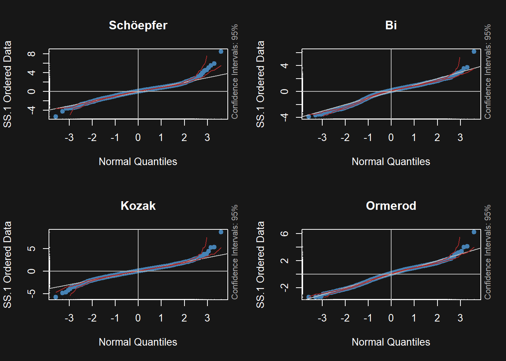

Processamento de um inventário florestal utilizando funções de afilamento
Autor
Gabriel de Freitas Pereira
1 Introdução
Um inventário florestal é uma prática que busca a quantificação, e por conseguinte, a qualificação das florestas em diferentes aspectos, como a produção de madeira entre outros possíveis produtos, através do uso de técnicas estatísticas de amostragem. Sendo assim, o inventário visa obter o máximo de informações de uma floresta com a máxima precisão e o mínimo custo. Esses três fatores desempenham papel importante no planejamento de um inventário florestal (JÚNIOR et al., 2020).
2 Objetivo
Realizar o inventário florestal de um povoamento com um cultivar de Eucalyptus grandis W. Hill ex Maiden x Eucalyptus urophylla S. T. Blake na região noroeste do Estado de Minas Gerais, para a estimar a produção madeireira dos seguintes produtos de forma independente:
PRODUTO 1: diâmetro mínimo de 5, 5cm sem casca e comprimento de tora de 5, 6m.
PRODUTO 2: diâmetro mínimo de 7, 5cm com casca e comprimento de tora de 3, 3m.
Quanto menor o erro padrão residual mais distante do ideal o modelo se encontra, ou seja, os resíduos estão mais distantes do valor real. Desse modo, comparando os modelos de forma isolada a partir dessa métrica estatística os modelos de Kozak e Bi obtiveram os melhores resultados para as estimativas de diâmetro com casca. Já para as estimativas de diâmetro sem casca, o modelo de Kozak foi o melhor. No entanto, vale ressaltar que uma métrica não é suficiente para escolhermos o melhor modelo de acordo com a nossa base, é necessário analisarmos outros fatores, que serão discutidos nesse relatório.
5.2 Raiz do erro quadrático médio
Raiz do erro quadrático médio dos modelos testados
Modelos
RMSE (com casca)
RMSE (sem casca)
Schöepfer (1966)
8.51
8.18
Bi (2000)
7.49
11.05
Kozak (2004)
7.47
7.47
Ormerod (1973)
11.84
12.47
Tabela 2.
A raiz quadrada do erro médio, RMSE (Root Mean Squared Error) é a raiz quadrada do erro médio, que nos auxilia a verificar a acurácia dos modelos, penalizando erros maiores, ou seja, é uma métrica mais sensível aos erros devido ao processo de quadratura que a produziu. Sendo assim, analisando os resultados dessa métrica quanto maior o RMSE pior será o modelo, logo, os modelos de Kozak e Bi novamente foram os melhores para as estimativas dos diâmetros com casca. E para as estimativas dos diâmetros sem casca, o modelo de Kozak também foi o melhor, se destacando entre os modelos testados para duas métricas estatísticas.
5.3 Análise Gráfica
Mostrar código
## Resíduos#' ##### 5° grauarv$res5grau <-residuals( ajlin ) * arv$daparv$res5grausc <-residuals( ajlinsc ) * arv$dap#' ##### metholarv$resbi <-residuals( bi )arv$resbisc <-residuals( bisc )#' ##### kozakarv$reskoz <-residuals( kozak )arv$reskozsc <-residuals( kozaksc )#' ##### ormerodarv$resorm <-residuals( ormerod )arv$resormsc <-residuals( ormerodsc )par( mfrow =c( 2, 2 ),pch =20,bg ="#171717",col.axis ="white",col.lab ="white",col.main ="white",fg ="white" ) fBasics::qqnormPlot( ( arv$res5grausc ), title =FALSE, main ="Schöepfer" )fBasics::qqnormPlot( ( arv$resbisc ), title =FALSE, main ="Bi" )fBasics::qqnormPlot( ( arv$reskozsc ), title =FALSE, main ="Kozak" )fBasics::qqnormPlot( ( arv$resormsc ), title =FALSE, main ="Ormerod" )

Figura 2. Gráfico de quantis de todos modelos testados - Diâmetros com casca.
Figura 3. Gráfico de resíduos de todos modelos testados - Diâmetros com casca.
Quando analisados os gráficos de resíduos (Figura 3) e os gráficos de normalidade dos resíduos QQ-plot (Figura 2), foi possível notar que os melhores modelos que apresentaram distribuições mais agrupadas em torno do zero, foram os modelos de Kozak e Bi. Sendo o modelo de Schöepfer aparentemente mais próximo do ideal nas ponteiras das árvores, no entanto esse modelo apresentou erros maiores (mais distantes de zero), principalmente na base das árvores, em relação aos modelos de Kozak e Bi.
Mostrar código
par( mfrow =c( 2, 2 ),pch =20,bg ="#171717",col.axis ="white",col.lab ="white",col.main ="white",fg ="white" ) fBasics::qqnormPlot((arv$res5grausc),title =FALSE, main ="Schöepfer")fBasics::qqnormPlot((arv$resbisc),title =FALSE, main ="Bi")fBasics::qqnormPlot((arv$reskozsc),title =FALSE, main ="Kozak")fBasics::qqnormPlot((arv$resormsc),title =FALSE, main ="Ormerod")
Figura 4. Gráfico de quantis de todos modelos testados - Diâmetros sem casca.
Figura 5. Gráfico de resíduos de todos modelos testados - Diâmetros sem casca.
A partir da Figura 4, a qual representa o gráfico de quantis é possível observar que os resíduos afirmam a normalidade. Além disso, com a análise dos gráficos de resíduos dispostos na Figura 5, foi possível notar que os melhores modelos, os quais apresentaram as melhores dispersões de resíduos devido às suas distribuições serem mais agrupadas em torno do zero, foram os modelos de Kozak e Schöepfer. Em contraponto, os demais modelos apresentaram erros maiores (mais distantes de zero), principalmente na base das árvores, apresentando alta heterogeneidade.
Desse modo, com o que foi observado nas análises gráficas e estatísticas o melhor modelo testado, e que será usado para os cálculos dos produtos para produção madeireira é o modelo de Kozak (2004).
6 Cálculo dos produtos para produção madeireira
Mostrar código
# coeficientes para obtenção dos volumescoef_kozak <-coef( kozak )coef_kozaksc <-coef( kozaksc )###### volume produto com casca --------------------------------------------------------------------# A tabela de sortimentos deve conter cinco colunas, que podem ter qualquer nome, mas devem estar na seguinte ordem: #diâmetro da tora na ponta fina, em centímetros; #comprimento mínimo da tora (líquido), em metros; comprimento máximo da tora (líquido), em metros; #e a perda resultante do traçamento de cada tora, em centímetros. Um ponto de atenção é que as linhas da tabela representam os produtos da madeira, e estes devem estar ordenados do mais valioso para o menos valioso, de modo que o algoritmo de extração de toras priorize aos produtos de maior valor comercial.# afilamento usando timbeR::poly5_logsfustes <-read.csv2( "fustes.csv" )sortimentoscc <-data.frame(NAME =c( "cc" ),SED =c( 7.5 ),min =c( 2 ),max =c( 3.3 ),LOSS =c( 10 ))# testando para produtos com cascavticc <-mapply( kozak_logs,dbh = fustes$cap/pi,h = fustes$htre,MoreArgs =list(coef = coef_kozak[ -10 ],p = coef_kozak[ 10 ],assortments = sortimentoscc,total_volume =TRUE,only_vol =TRUE ) )vticc <-t( vticc )vticc <-as.data.frame( vticc )vticc$cc <-as.numeric( vticc$cc )vticc$Total <-as.numeric( vticc$Total )###### volume produto sem casca --------------------------------------------------------------------sortimentos <-data.frame(NAME =c( "sc" ),SED =c( 5.5 ),min =c( 2 ),max =c( 5.6 ),LOSS =c( 10 ))# testando para produtos sem cascavtisc <-mapply( kozak_logs,dbh = fustes$cap/pi,h = fustes$htre,MoreArgs =list(coef = coef_kozaksc[ -10 ],p = coef_kozaksc[ 10 ],assortments = sortimentos,total_volume =TRUE,only_vol =TRUE ) )vtisc <-t( vtisc )vtisc <-as.data.frame( vtisc )vtisc$sc <-as.numeric( vtisc$sc )###### Juntando resultados para fazer inventário de cada sortimento.fustes <-read.csv2( "fustes.csv" )fustes$vprodisc <- vtisc$scfustes$vprodicc <- vticc$ccfustes$vti <- vticc$Total
6.1 (a) Erro percentual amostral e intervalo de confiança do volume do produto 1 (sem casca) para a população.
Mostrar código
##### produto 1 --------------------------------------------------------------------parcela <-aggregate(list( vprod1 = fustes$vprodisc ),list( talhao = fustes$talhao, parcela = fustes$parcela ), sum )#[m³/parcela] media <-mean(parcela$vprod1)# area da parcela areaparc <-mean(((fustes$raio^2)*pi))# m³/parc para m³/ha.parcela$vprod1_ha<-parcela$vprod1*10000/areaparc# para calcular o volume medio m³/ha vmed <-mean(parcela$vprod1_ha) # variancia do volume m6/ha vvar <-var(parcela$vprod1_ha) # desvio padrao do volume m³/ha vdesv <-sd(parcela$vprod1_ha) n <-length(parcela$vprod1_ha) talhao <-subset(fustes, duplicated( talhao ) == F,c( "talhao", "area") )#area da fazenda em haarea_fazenda <-sum(talhao$area)#numero de parcelas que cabem na fazenda N <- area_fazenda *10000/areaparc erro_padrao_media <-sqrt( vvar/n ) * ( 1- n / N ) #erro do inverro_inv_unid <-qt( 0.975, n -1 ) * erro_padrao_media #erro percentualerro_inv_perc_prod1 <- erro_inv_unid/vmed *100#Intervalo de confiança em m³/ha# cat(paste(round(vmed-erro_inv_unid,2)," a ", round( vmed+erro_inv_unid, 2 ),"m³/ha com 95% de confiança (produto 1)", sep = "" ) )prod1_inf <-round(( vmed - erro_inv_unid) * area_fazenda, 2 )prod1_sup <-round(( vmed + erro_inv_unid) * area_fazenda, 2 )prod1_media <-round( vmed * area_fazenda, 0 )
De acordo com os dados obtidos no processamento do inventário, pode-se esperar uma produção média do produto 1 de 98104m³, com um intervalo de confiança de 95115.29m³ a 101093.6m³. Sendo o erro percentual amostral de 3.05%.
6.2 (b) Erro percentual amostral e intervalo de confiança do volume do produto 2 (com casca) para a população.
Mostrar código
##### produto 2 --------------------------------------------------------------------parcela <-aggregate(list( vprod2 = fustes$vprodicc ),list( talhao = fustes$talhao, parcela = fustes$parcela), sum )#[m³/parcela] media <-mean( parcela$vprod2 )#area da parcela areaparc <-mean( ( ( fustes$raio^2 ) * pi ) )# m³/parc para m³/ha.parcela$vprod2_ha <- parcela$vprod2 *10000/areaparc#para calcular o volume medio m³/ha vmed <-mean( parcela$vprod2_ha ) #variancia do volume m6/ha vvar <-var( parcela$vprod2_ha ) #desvio padrao do volume m?/ha vdesv <-sd( parcela$vprod2_ha )n <-length( parcela$vprod2_ha )talhao <-subset( fustes, duplicated( talhao ) == F,c("talhao", "area" ) ) #area da fazenda em haarea_fazenda <-sum(talhao$area)#numero de parcelas que cabem na fazenda N <- area_fazenda *10000/ areaparc erro_padrao_media <-sqrt( vvar/ n ) * ( 1- n/ N ) #erro do inverro_inv_unid <-qt( 0.975, n-1) * erro_padrao_media#erro percentualerro_inv_perc_prod2 <- erro_inv_unid/vmed *100#Intervalo de confiança em m³/ha# cat(paste(round( vmed - erro_inv_unid, 2 ), " a ", round( vmed + erro_inv_unid, 2 ),"m³/ha com 95% de confiança (produto2)", sep = "" ) )prod2_inf <-round(( vmed - erro_inv_unid) * area_fazenda, 2 )prod2_sup <-round(( vmed + erro_inv_unid) * area_fazenda, 2 )prod2_media <-round( vmed * area_fazenda, 0 )
De acordo com os dados obtidos no processamento do inventário, pode-se esperar uma produção média do produto 2 de 108568m³, com um intervalo de confiança de 105160.1m³ a 111975m³. Sendo o erro percentual amostral de 3.14%.
6.3 (c) Erro percentual amostral e intervalo de confiança do volume total com casca para a população.
Mostrar código
##### vtcc --------------------------------------------------------------------parcela <-aggregate(list( vtcc = fustes$vti ),list( talhao = fustes$talhao, parcela = fustes$parcela ), sum )#[m³/parcela] media <-mean( parcela$vtcc )#area da parcela areaparc <-mean( ( ( fustes$raio^2 ) * pi ) )# m³/parc para m³/ha.parcela$vtcc_ha <- parcela$vtcc *10000/areaparc#para calcular o volume medio m³/ha vmed <-mean( parcela$vtcc_ha ) #variancia do volume m6/ha vvar <-var( parcela$vtcc_ha ) #desvio padrao do volume m³/ha vdesv <-sd( parcela$vtcc_ha )n <-length( parcela$vtcc_ha )talhao <-subset( fustes, duplicated( talhao ) == F,c("talhao", "area" ) ) #area da fazenda em haarea_fazenda <-sum( talhao$area ) #numero de parcelas que cabem na fazenda N <- area_fazenda *10000/ areaparcerro_padrao_media <-sqrt( vvar /n ) * ( 1- n / N ) #erro do inverro_inv_unid <-qt( 0.975, n -1 ) * erro_padrao_media #erro percentualerro_inv_perc_prod3 <- erro_inv_unid / vmed *100#Intervalo de confiança em m³/ha# cat(paste(round( vmed - erro_inv_unid, 2 )," a ",round( vmed + erro_inv_unid, 2 ),# "m³/ha com 95% de confiança para volume total com casca", sep = "" ) )prod3_inf <-round(( vmed - erro_inv_unid) * area_fazenda, 2 )prod3_sup <-round(( vmed + erro_inv_unid) * area_fazenda, 2 )prod3_media <-round( vmed * area_fazenda, 0 )
De acordo com os dados obtidos no processamento do inventário, pode-se esperar uma produção média do produto 3 de 116896m³, com um intervalo de confiança de 113424.6m³ a 120367.8m³. Sendo o erro percentual amostral de 2.97%.
7 Conclusão
O volume total com casca apresentou maior potencial de produção segundo as estimativas presentes neste relatório.
8 Referências
JÚNIOR, C. F. D. et al. Measure: sistema de coleta de informações para inventário florestal. Tecno-Lógica, 2020.